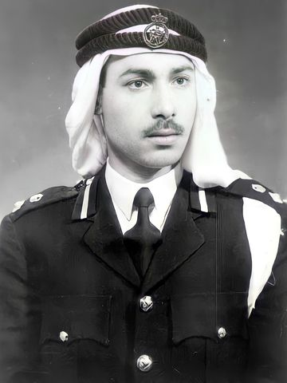

Jassim Abdulaziz Al-Qatami
1927 to 2012
Life in brief
Jassim bin Abdulaziz Al-Qatami was Kuwait's first police officer and became Director of Police, resigning at the time of Suez. He served as Under-Secretary of Foreign Affairs, was elected to the first National Assembly in 1963, and spent his life working for the constitution, democracy and human rights. In 1989 his diwaniya in Shamiya opened the Monday diwaniyas movement. He died in June 2012.
Life facts
- Born
- about 1927, in his own words (Al-Raed interview, 1953)
- Died
- 29 June 2012
- Lived
- 1978, Paddington, London, England, United Kingdom
- Lived
- Photographed in Britain in 1955 with Yousef Al-Shaya, Hmoud Al-Mahawi, Barjas Hmoud Al-Barjas and Ibrahim Al-Mahawi (Min Qadim Al-Kuwait, part 2), United Kingdom
- Research
- Subject of a 2022 master's thesis by Huda Riyadh Al-Khuza'i, University of Al-Muthanna, Iraq
- Education
- In 1952 he was photographed with the Kuwaiti students in Cairo (Rijal fi Tarikh Al-Kuwait, part 1), Cairo, Egypt
- Education
- 1949 to 1950: first year at the Police College in Cairo, living at Bait Al-Kuwait (Al-Ba’tha, 1949, p. 288), Cairo, Egypt
- Public life
- In Cairo during the Iraqi invasion he spoke at the Zamalek hotel and told Kuwaitis the crisis would end and the occupation would leave (Dr Abdulmohsen Hamada, Al-Jarida, 26 June 2019), Cairo, Egypt
- Public life
- Led the group that boycotted the 1971 elections after the 1967 vote was rigged (Prof. Ghanem Al-Najjar, Al-Jarida, 11 July 2012)
- Student life
- At Bait Al-Kuwait in Cairo he acted in the students’ theatre troupe, wrote for Al-Ba’tha, and was known for imitating Egyptian dialects; Al-Ba’tha calls him the nephew of Eissa bin Qatami (1949, pp. 67, 74 and 248), Cairo, Egypt
- Sport
- First president of the Kuwait Olympic Committee: its first meeting, in January 1958, elected its first board, chaired by Jassim Al-Qatami (Al-Anba, 15 October 2013, p. 30, and 30 June 2019, p. 32), Kuwait
Family
- Father
- Abdulaziz Abdulwahab Abdulaziz Al-Qatami
- Mother
- Aisha Al-Oraifan
- Spouse
- Shaikha Al-Humaidhi
- Children
- Nizar Jassim Al-Qatami